In this writing, I want to share how I edited my Power BI project files in VS Code, let Power BI Desktop apply them without closing anything, and found that a copy-pasted page folder is not a page.
The August 2026 release of Power BI Desktop added something I had been waiting for since I wrote about the Desktop Bridge. Desktop now notices when my project files change on disk and offers to apply them. My plan was simple: make three edits in VS Code, each one bigger than the last, and watch what Desktop did with each. A page name, then a measure, then a whole new page. The first two behaved. The third one looked like it behaved, which turned out to be the more interesting result.
1. The August Build and the Switch That Has to Be On
This only works on the August release or later.
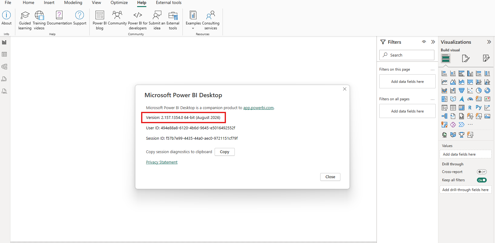
Two boxes under Preview features matter here. Power BI Project (.pbip) save option is the one that makes any of this possible, and it has been there for a while. I also ticked Enable external tool access to Power BI Desktop through secure local APIs myself. It was not on by default in my install.
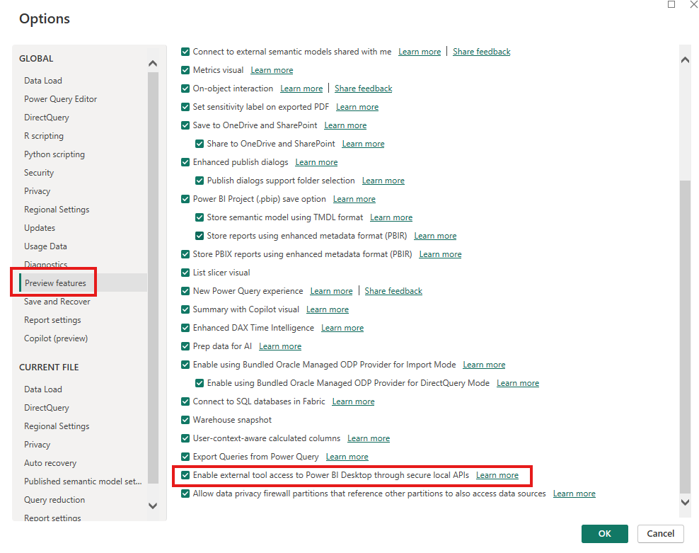
The Prerequisites for editing PBIP files externally section of the Edit Power BI Desktop project files in Visual Studio Code article lists the August build and the PBIP preview switch as requirements, and asks for a restart after enabling it.
I ran everything against contoso_project, a report connected to directlake_import_composite. That is the composite model I built earlier, part Direct Lake and part import, and the status bar reads Storage Mode: Mixed in every screenshot below. I mention it now because it matters more than I expected in section 3.
2. The Entry Point Opened the Report Folder, Not the Project
Clicking the title bar opens the project flyout, and there is a new Open in section at the top with Visual Studio Code in it.
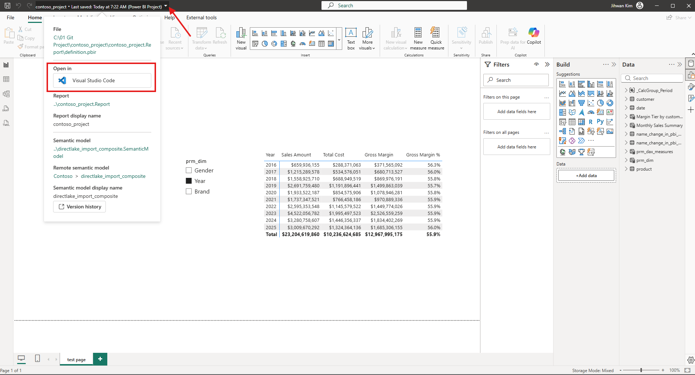
I clicked it, and VS Code opened on contoso_project.Report. Only that. The semantic model folder was nowhere in the tree.
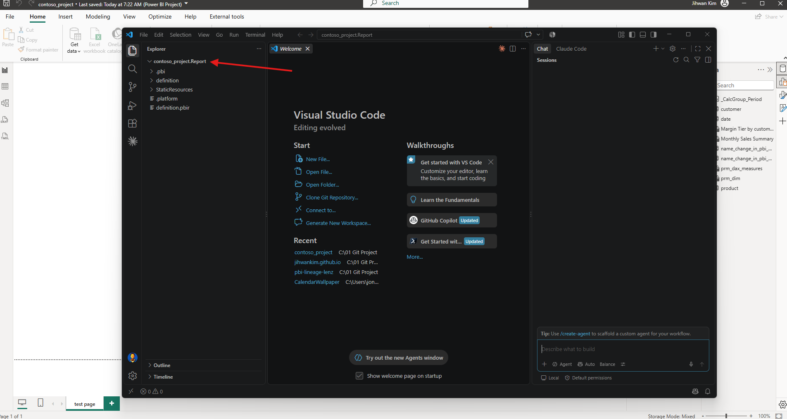
This confused me for a minute, because the same flyout clearly lists a semantic model at ..\directlake_import_composite.SemanticModel. The answer is one line in the Open the PBIP folder in VS Code section of the Edit Power BI Desktop project files in Visual Studio Code article: VS Code launches the folder path of the opened file, which might be either the .pbip or the .pbir.
My file path in that flyout ends in contoso_project.Report\definition.pbir. I had opened the report, so Desktop handed VS Code the report folder. The semantic model is a separate folder that sits outside it, and the report only holds a pointer to it.
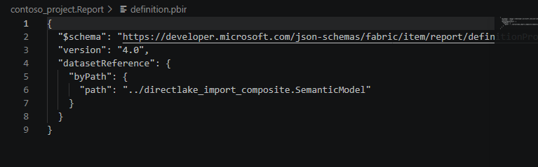
So if you want both folders in front of you, do not open VS Code from Power BI Desktop. Open VS Code on its own, and go to the repository or the project folder where your Power BI project lives.
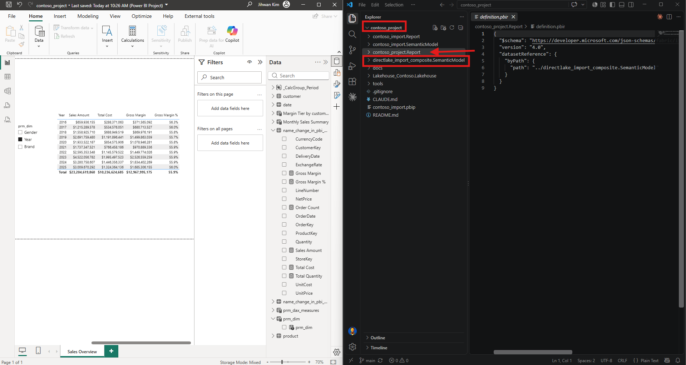
Two reports and two semantic models live side by side in this repository, and opening VS Code myself puts all of them in front of me at once.
3. One Page Name, One Banner, and Two Dialogs I Did Not Expect
For the first edit I picked the smallest thing I could think of. My only page was called test page, so I opened its page.json and changed displayName to Sales Overview.
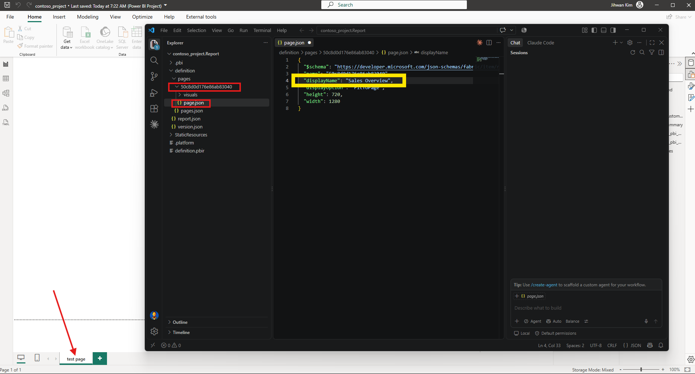
I saved in VS Code, and without touching Desktop at all, a banner appeared across the top of it.
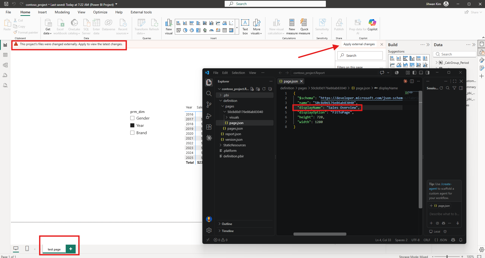
This project's files were changed externally. Apply to view the latest changes. With an Apply external changes button on the right. I clicked it, and got a dialog I had been warned about.
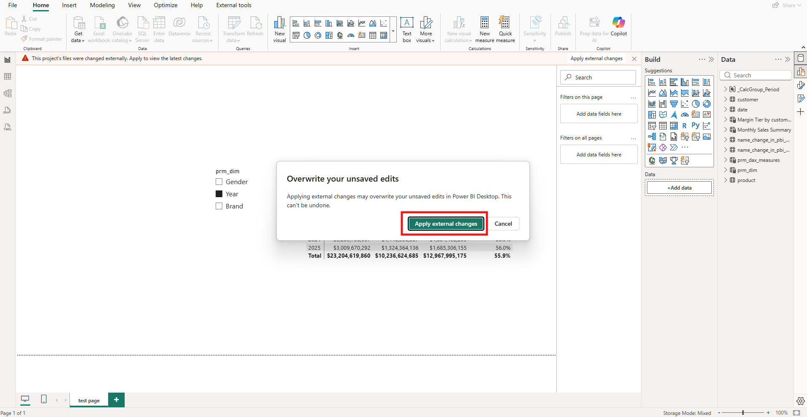
That one is documented. The How Power BI Desktop detects and reloads external changes section of the Edit Power BI Desktop project files in Visual Studio Code article says that when unsaved changes exist in Power BI Desktop, choosing Apply external changes replaces them with the contents of the files on disk, and that choosing Cancel keeps both the unsaved Desktop work and the unapplied external edits. That is the right warning to show.
Then came a second dialog that is not in the documentation at all.
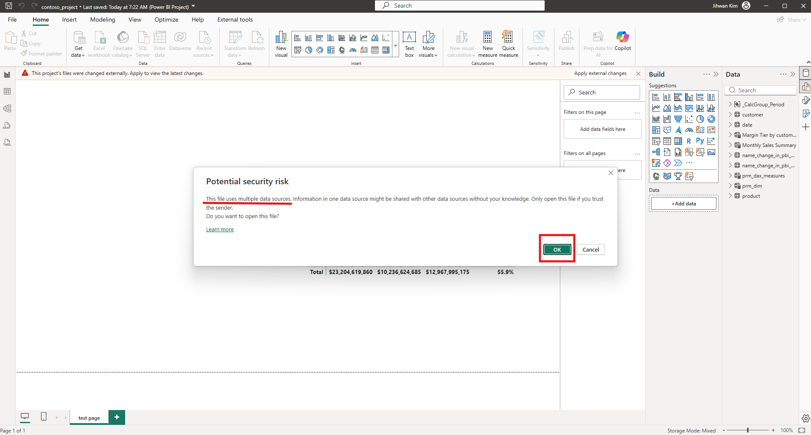
Potential security risk. This file uses multiple data sources. This is the privacy prompt you normally see when opening a file, and it appears here because applying external changes reloads the whole model rather than patching it. Under Considerations and limitations in the Edit Power BI Desktop project files in Visual Studio Code article, Power BI Desktop reloads the entire report, semantic model, or both, and it doesn't reload individual files or visuals.
My model is composite, mixing Direct Lake and import, so it has multiple data sources and the prompt has something to warn me about. A model with a single source would have nothing to say here. It came up on the first apply of my session and I did not see it again on any of the later ones, so I cannot tell you exactly when it decides to appear. Only that it can, and that it stops the reload until you answer it.
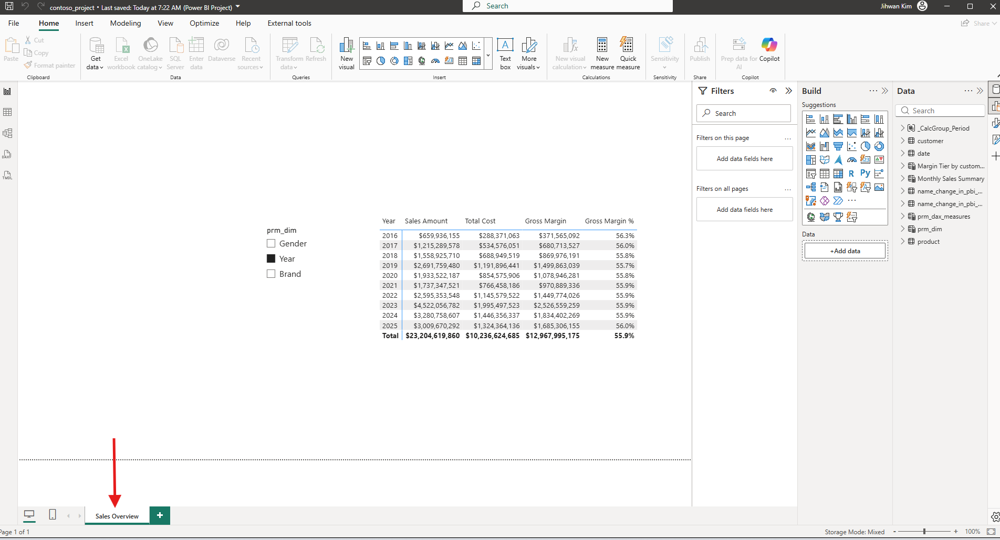
The tab at the bottom now reads Sales Overview. One edit in VS Code, then a banner and two dialogs in Desktop, and Desktop stayed open the whole time. I never closed it once during this experiment, and after the Desktop Bridge post, where I had to reopen the file every time I changed something on disk, that is the part I had been waiting for.
4. A Measure in TMDL Needs a Second Click
For the second edit I moved to the semantic model, which meant reopening VS Code on the project root so the TMDL files were in reach. I picked Sales Amount and scaled it down by a million, purely so the change would be impossible to miss on screen.
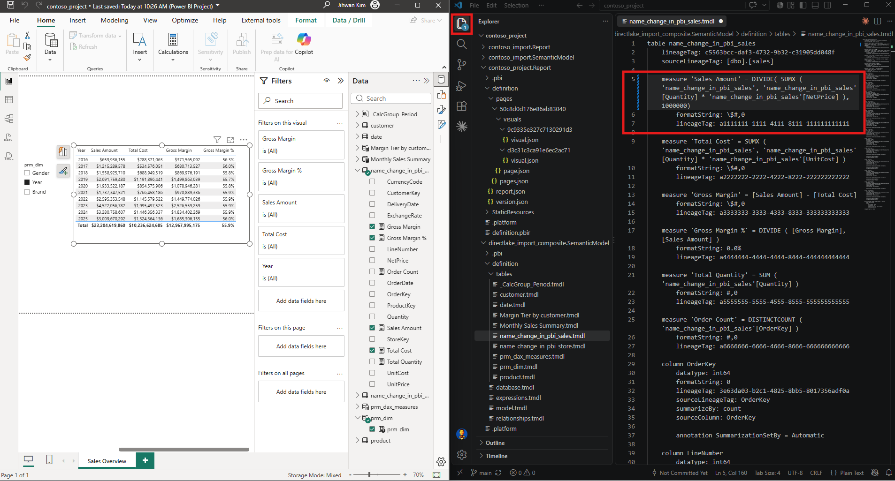
The same banner appeared, and I applied it. Then a second banner took its place, and this one I had not seen before.
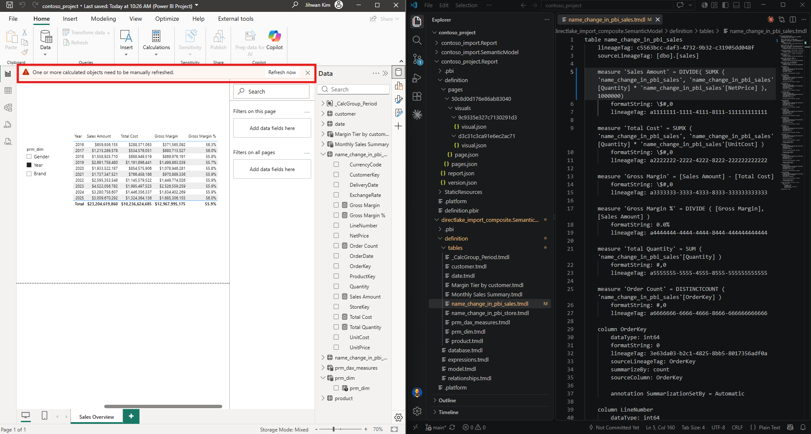
One or more calculated objects need to be manually refreshed. With a Refresh now button. Until I clicked that, the numbers on my canvas were the old ones while the model definition on disk was the new one. Only after the refresh did the table show what I had written.
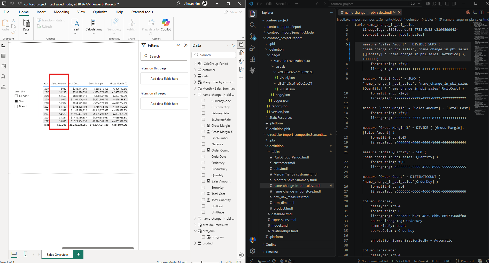
2016 went from $659,936,155 to $660, which is what dividing by a million looks like. The other columns went strange at the same time, because Gross Margin subtracts an unscaled Total Cost from a scaled Sales Amount. That was my doing, not the feature's.
The rule I took away is short. Clicking the banner applies the files. A model edit then needs a second click, on a second banner in the same place, before the numbers on screen catch up. If you stop after the first one, the model definition on disk is already the new version while your canvas is still showing the old one.
5. Copy, Paste, Apply, and Nothing Happened
Now the third edit. If Desktop can pick up a renamed page and a rewritten measure, surely it can pick up a new page. In VS Code I right-clicked my page folder, chose Copy, and pasted it back into the same pages folder.
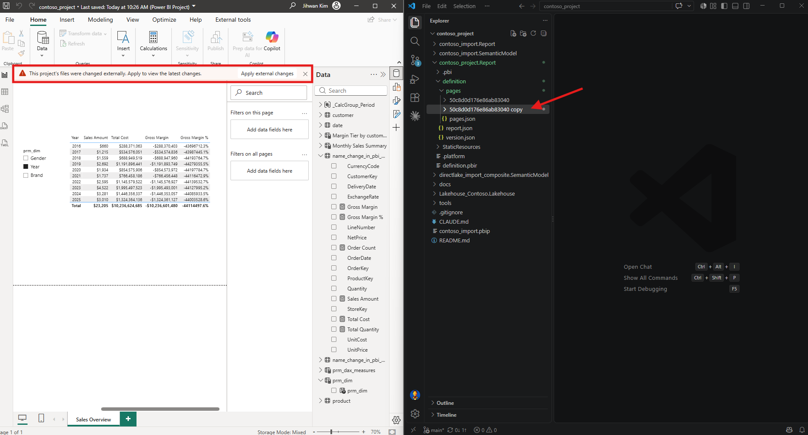
VS Code created 50c8d0d176e86ab83040 copy, and Desktop put up the banner. So far so good.
I did not believe it would work, and I want to be honest about why before I clicked anything. I had copied a folder. That is the only thing I had done. pages.json still listed one page, because I had not opened pages.json and I had not written anything into it.
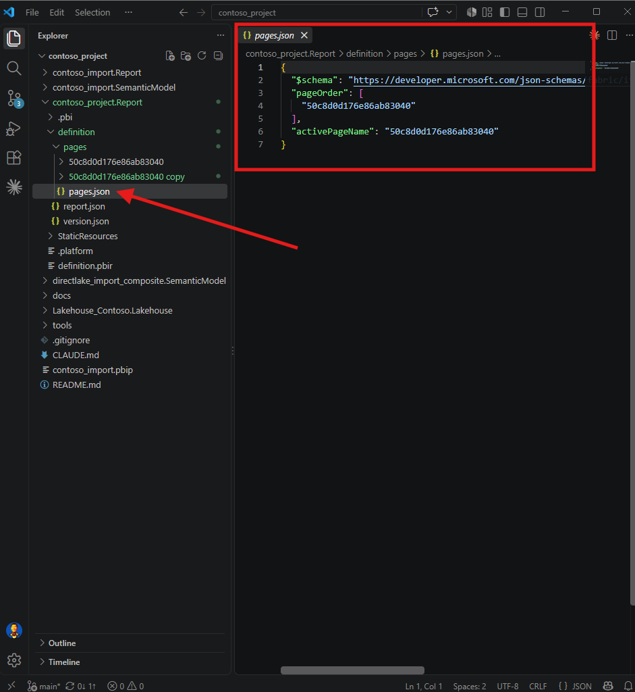
Nothing was going to fill that in on my behalf, and I would not want it to. This is the part I actually wanted to test. It is very tempting to open VS Code, copy something that looks right, and expect Power BI to work out the rest. That was one thing I could already see missing, and there were others I could not see yet. So I clicked Apply external changes anyway, because I wanted to see what failing looked like.
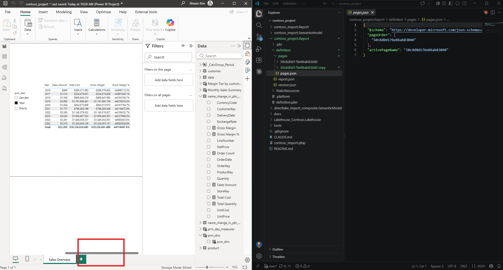
What failing looked like was success. No error. No warning. No red text anywhere. One tab at the bottom, and Page 1 of 1 in the corner. The banner had told me the files changed, and the files had changed. It never told me the result would be a page, because it does not know.
6. Three Names Have to Agree
The reason sits inside the copied folder. Copying a folder copies what is in it, so the new page.json still carried the original page's name.
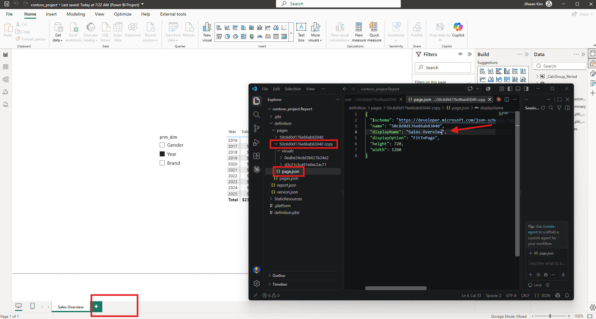
Two folders, two files, one identifier between them. Rather than hunt for the rest of it by hand and miss something, I asked AI what else needed changing, and gave it the two folder paths.
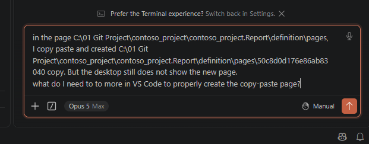
The answer came back as a short list I could check one file at a time. First, the folder itself had to get a new twenty-character identifier of its own.
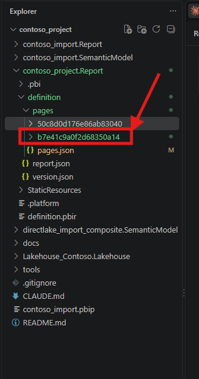
Second, pages.json had to list it.
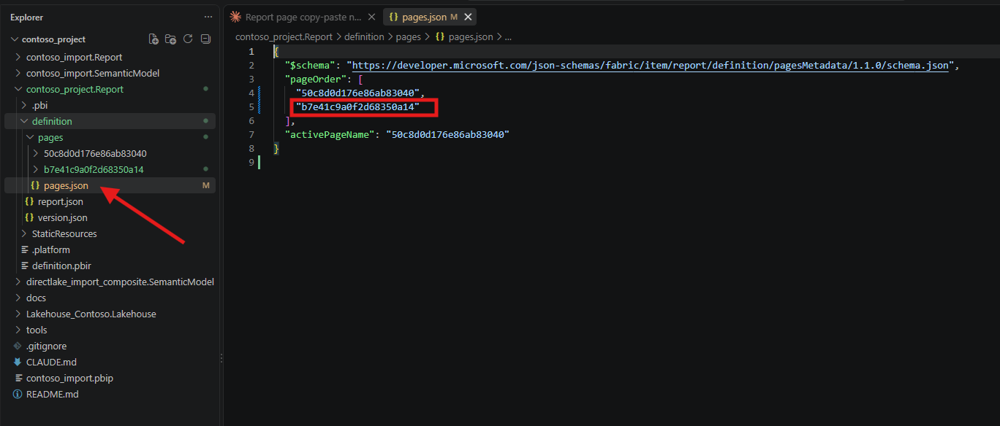
Third, and this is the one my own notes forgot, the name inside the copied page.json had to match its new folder.
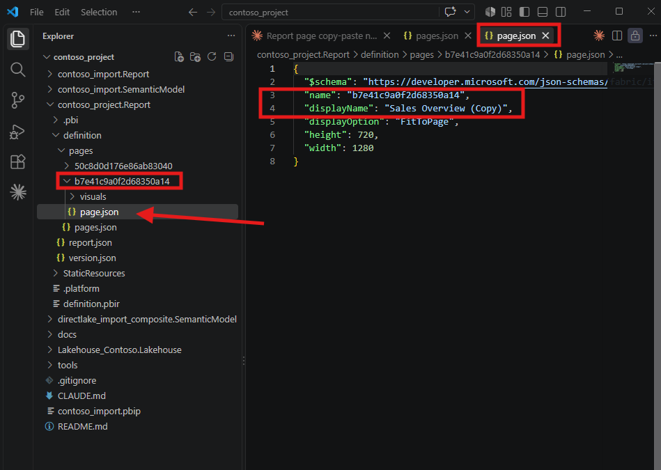
I wrote my working notes as I went, and when I read them back they recorded two changes, the folder and pages.json. There were three. The name property is easy to skip because the file is perfectly valid on its own. It is only wrong in relation to the folder around it, and nothing in VS Code, in the JSON schema, or in Desktop says so.
With all three agreeing, I applied again.
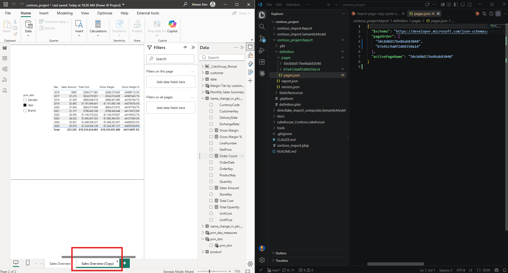
Page 2 of 2. A copied page folder is not a page until the folder name, the name inside its page.json, and the entry in pages.json all say the same thing.
Readers of Every PBIR Object Has Two Names will recognise the shape of this. That post found that the folder name and the name property are tracked independently, and that Power BI is perfectly happy when they disagree. This is what that independence costs when you are creating an object rather than renaming one. Renaming badly gives you a report that works and reviews poorly. Creating badly gives you nothing at all, quietly.
7. From a DevOps Standpoint: The Banner Is a Reload, Not a Review
From a DevOps standpoint, this feature closes a real gap and opens a smaller one, and the smaller one is the part a team has to plan for.
Code review. My broken copy and paste would have passed review. A new folder, valid JSON, every file correctly formed, and nothing anywhere in it saying that the page will not exist. A reviewer reading only the changed files approves a page that Power BI quietly ignores.
Version control. The three names live in three separate places, so one new page is one change to a folder and two changes to files. If only some of them are committed, the report still opens and still looks fine. The missing piece does not announce itself.
Automation. A script can write these files just as easily as I can, and it will make exactly the same mistake, because the mistake is not a typo. It is not knowing that a new page needs three matching names. Anything that generates report files has to be told that rule, or it will keep producing folders that look correct and do nothing.
Governance. The banner answers one question, which is whether the files on disk changed. It does not answer whether those files still add up to a working report, and it was never meant to. Something else has to ask that. Last time I turned one of the rules on my team list into a check that runs before a pull request can be merged, and a page name check would work the same way: read the folder names, read the name inside each page.json, read pageOrder, and fail when the three do not match.
One caution before you build anything on top of this. All of it is preview. The Considerations and limitations section of the Edit Power BI Desktop project files in Visual Studio Code article lists four files you cannot edit outside Power BI Desktop at all during preview: definition.pbir, report.json, mobileState.json, and semanticModelDiagramLayout.json. The same section also says that reloading resets filters and some user interface elements, so do not be surprised when your slicers go back to where they started.
A Note on Working with AI
I want to be clear about the division of work. I ran every step myself, made every edit, clicked every button, and every screenshot comes from my own session. I knew before clicking that the copy-paste would not work and I knew one of the reasons, because I could see pages.json had not changed. What I did not know was the full list, and rather than edit four or five places by hand and miss one, I asked. AI told me where to look. It did not tell me what the three names were for, and if I had not understood that already I would not have been able to check its answer.
That is the honest version of what this new feature enables. Writing directly in VS Code to update a Power BI report looks impressive and it genuinely works. Without a real understanding of how the files are put together, it leads somewhere you did not intend, and nothing warns you when it does.
Closing Thoughts
This experiment left me with one sentence I keep repeating to myself. The Apply external changes banner tells me my files changed. It does not tell me my files still add up to a working report.
That banner is the one across the top of Desktop, the one that says the project files were changed externally. Clicking it is a reload. Desktop reads what is on disk and rebuilds the report and the model from it. If what is on disk describes a working report, you get a working report. If it describes a folder that nothing points at, carrying an identifier that already belongs to another page, you get silence, and silence looks exactly like success until you check the page count in the corner.
There is plenty I did not test. My report has no bookmarks, so I never found out what a copied page does to bookmark references. I never edited a visual.json by hand, only whole visual folders carried along by the copy. And I only ever added a page, never deleted one, which I suspect has its own list of places to update.
The whole of it is three names, in three places, for one page.
I hope this helps having fun in exploring external edits to your Power BI project files and embracing this new era of reports you can author in a code editor!